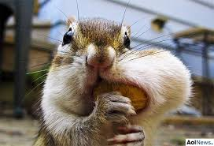

Um esquilo consegue colocar sua nozes na boca?

Um esquilo "ganancioso" foi fotografado tentando abocanhar uma quantidade de nozes maior do que conseguia mastigar em Ottawa, no Canadá.
De acordo com o jornal britânico “Daily Mail”, o animal estava com outros oito esquilos que também compartilhavam
as nozes.
Ele parecia tão ansioso em devorar a comida, que colocou a refeição toda de uma vez na boca, mas foi surpreendido ao perceber que nem tudo cabia ao mesmo tempo.